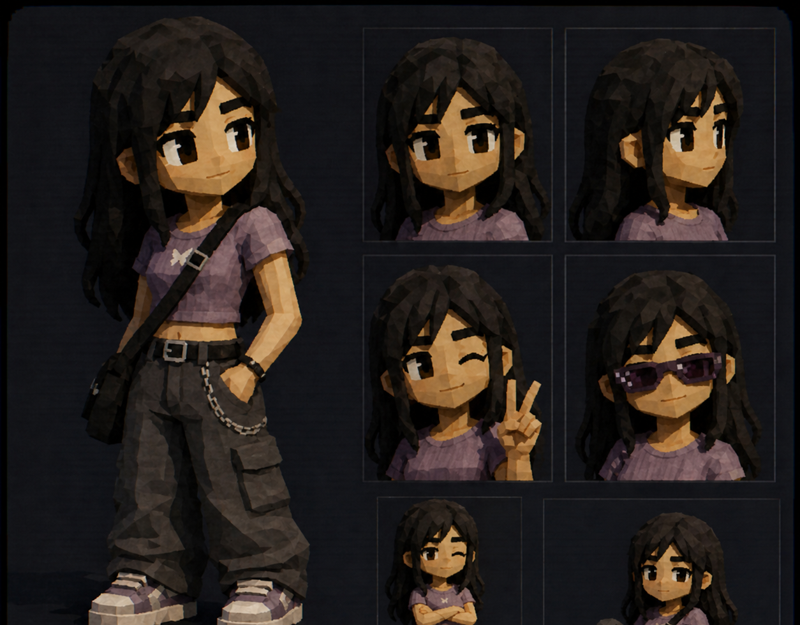
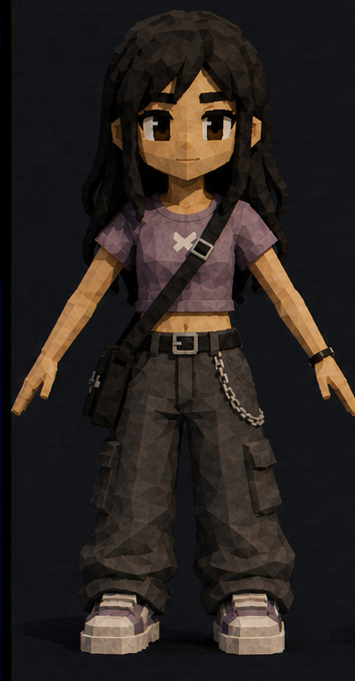
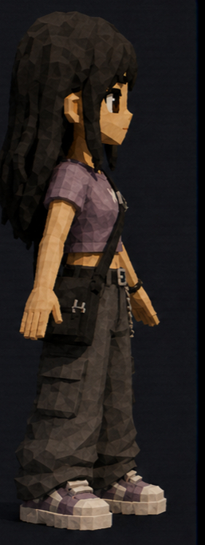
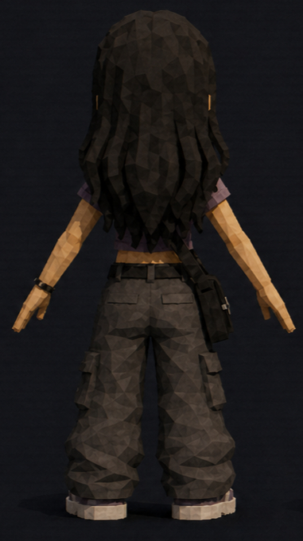
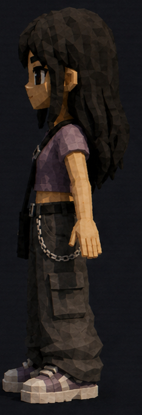

Avoidant by instinct. Hopeless romantic anyway. She keeps her distance,
reads the room too well, and still believes the right person might
understand the quiet parts.
5'5DivaBaddieSlays
MODEL VIEWREADY

read
Soft heart, locked door.
Dia does not hand out access. She watches first, jokes second, and
leaves before the conversation gets too honest. The romance is real,
but so is the exit plan.
Her style says she knows exactly what she is doing. The face says she
might deny it if you point that out.
details
Height
5'5
Personality
Avoidant
Heart
Hopeless romantic
Weapon
Heels
Energy
Diva. Baddie. Slays.
model
Turnaround
One clean rotation: front, side, back, side. Same outfit, different
angle, no extra noise.




rotating model view
mood
A little unreachable. Fully noticed.
Brown eyes, cargo pants, chain, crossbody bag, purple tee, heavy hair.
Dia looks casual until you notice every piece is doing work. She is
guarded, not cold. Dramatic, but never loud about it.